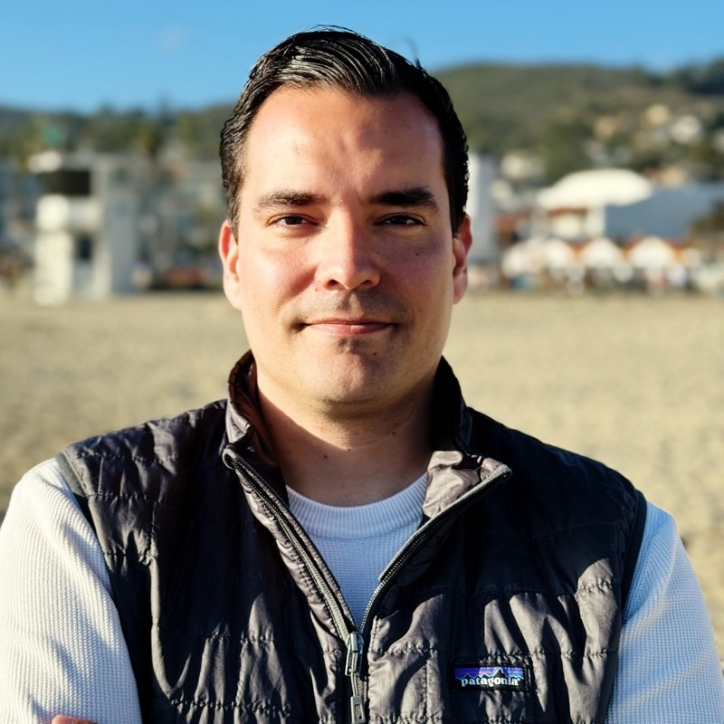

Commercial readiness
Fix the revenue metrics, growth rate, and unit economics that investors benchmark. Build the numbers that make diligence fast and confident.
Series A Fundraising Consulting · Latin America
A focused program for B2B founders in Mexico, Colombia, Argentina and Latin America who are preparing to raise their Series A. Build the investor narrative, commercial proof points, and GTM story that LATAM VCs fund.
What this program covers
Most LATAM founders lose rounds not because the business is weak — but because the commercial proof, the story, and the timing aren't aligned. This program closes that gap.
Fix the revenue metrics, growth rate, and unit economics that investors benchmark. Build the numbers that make diligence fast and confident.
Show a repeatable, scalable sales motion — not just a founder who can close. Investors fund the machine, not the individual.
Build the pitch that answers the questions LATAM VCs actually ask. Market, traction, team, and use of funds — framed to win conviction.
How the engagement works
Start with a fundraising audit to map commercial gaps — the same questions a Series A investor will ask in diligence.
Address the commercial weaknesses before approaching investors. Fix metrics, pricing, and GTM motion first.
Craft the investor story that connects traction to market opportunity in language that resonates with LATAM VCs.
Define timing, target investor list, intro strategy, and how to run the process from first meeting to term sheet.
Who it is for
Who it is not for
Why Jorge
Jorge Tellez has originated over $2.5B in transactions, launched a VC arm, and built B2B revenue from zero across multiple companies. He knows what investors look for — because he has been on both sides of the table.

Originated and structured capital transactions at scale — not just a growth advisor.
Regional GM and growth leader with real experience across the LATAM VC and startup ecosystem.
Monthly sessions with weekly accountability, focused on commercial execution and investor readiness.
Harvard, UNC Chapel Hill, and Tec de Monterrey educated. Deep roots in the LATAM tech and startup ecosystem. Track record across B2B SaaS, fintech, and education across the Americas.
What founders say
A few short excerpts from recommendations, chosen for relevance and clarity.
"Jorge Téllez delivers an exceptional mentoring skillset. His mentorship has been impactful across growth, branding, capital raising, and strategic execution."

"With Jorge, we got our commercial structure in order in four weeks. The foundation we put in place could take us to triple our results and drive measurable execution."
"He has consistently made himself available to provide guidance and support, going above and beyond to help us navigate startup challenges."
"Jorge es más que un mentor: mezcla visión estratégica con un entendimiento práctico para tomar decisiones con foco y velocidad."
Start here — it's free
The fastest way to start is a fundraising audit. Share a few core metrics on WhatsApp and Jorge will reply with an honest read on where you stand for Series A.